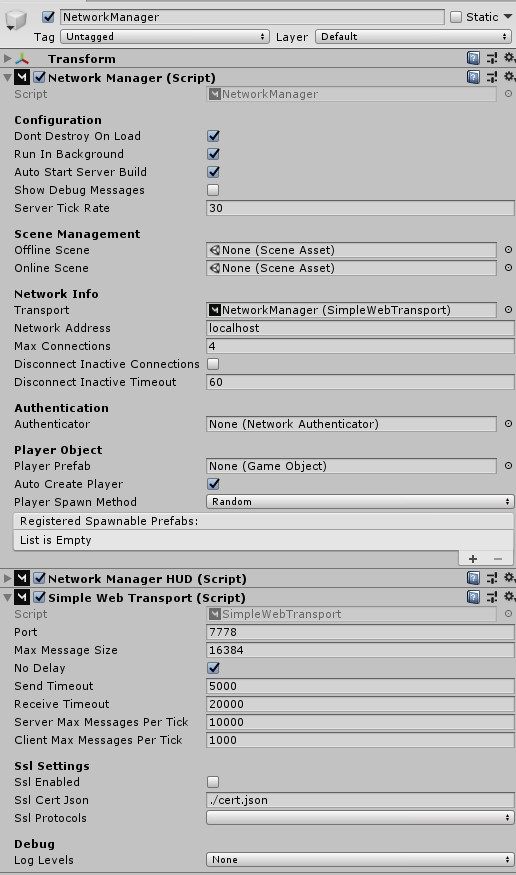

Simple Web Transport
Transport that uses the websocket protocol. This allows this transport to be used in WebGL builds of unity.
Source code: SimpleWebTransport

Usage
- Download the code from the source folder or package on Release page.
- Put the code somewhere in your Assets folder
- Replace your existing Transport with SimpleWebTransport on your NetworkManager
Bugs?
Please report any bugs or issues Here
Websocket Secure
This transport supports the wss protocol which is required for https pages.
How to create and setup an SSL Cert
If you host your webgl build on a https domain you will need to use wss which will require a ssl cert.
Logging
Log levels can be set using the dropdown on the transport or or setting Mirror.SimpleWeb.Log.level.
The transport applies the dropdown value in its Awake and OnValidate methods.
Log methods
Log methods in this transport use the ConditionalAttribute so they are removed depending on the preprocessor defines.
These preprocessor defines effect the logging
DEBUGallows warn/error logsSIMPLEWEB_LOG_ENABLEDallows all logs
Without SIMPLEWEB_LOG_ENABLED info or verbose logging will never happen even if log level allows it.
See the Unity docs on how set custom defines.